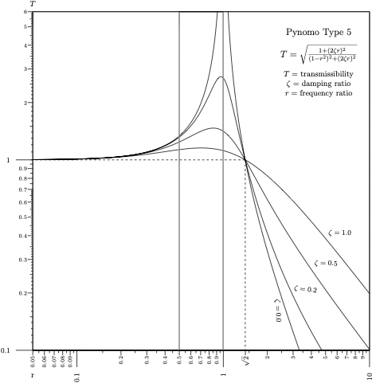

Frequency response¶
Contribution: Add Lamorille
Theory and background¶
For a single degree of freedom system (driven harmonic oscillator), the force frequency response (transmissibility) \(T\) is defined as the ratio between the magnitude of the transmitted force and the magnitude of the applied force. The frequency factor (dimensionless frequency) \(r\) is the ratio between the driving frequency and the natural frequency of the system. The damping ratio \(\zeta\) is a measure describing how rapidly the oscillations decay from one bounce to the next, it is specific to the system. Vibration isolation is possible only when the frequency factor is greater than \(\sqrt{2}\). Relation is according equation:
\(T = \sqrt{\frac{1 + (2\zeta r)^2}{(1-r^2) + (2\zeta r)^2}}.\)
Generated nomograph¶
Source code¶
1# T=sqrt[(1+(2zr)**2)/((1-r**2)**2+(2zr)**2]
2# Copyright Add LaMorille 2023
3# merging of two type 5 blocks, as pynomo does not draw the whole function in one
4
5
6from pynomo.nomographer import *
7from pyx import *
8import numpy as np
9
10u_min = 0.1 # T
11u_max = 6.0
12
13wd_min_left = 0.05 # r
14wd_max_left = 1.0
15
16wd_min_right = 0.5 # r
17wd_max_right = 10.0
18
19
20def fT(r, z): # u(x,v)
21 r = np.exp(r) # log x scale
22 return ((1 + 4 * r * r * z * z) / (((1 - r * r) ** 2) + 4 * r * r * z * z)) ** 0.5
23
24
25block_params_left = {
26 'block_type': 'type_5',
27 'u_func': lambda u: np.log10(u), # log y scale
28 'v_func': lambda x, v: np.log10(fT(x, v)), # log y scale
29 'u_values': [u_min, u_max],
30 'scale_type_u': 'log smart',
31 'u_tick_levels': 4,
32 'u_tick_text_levels': 2,
33 'u_title': '$T$',
34 'u_title_draw_center': False,
35 'u_tick_side': 'left',
36 'v_values': [0.0, 0.2, 0.5, 1.0],
37 'v_manual_axis_data': {0.0: r'', 0.2: r'', 0.5: r'', 1.0: r''},
38 'v_title': '',
39 'manual_x_scale': True,
40 'scale_type_wd': 'log smart',
41 'x_min': np.log(wd_min_left), # log x scale
42 'x_max': np.log(wd_max_left), # log x scale
43 'wd_func': lambda x: np.log(x), # log x scale
44 'wd_func_inv': lambda x: np.exp(x), # log x scale
45 'wd_tick_levels': 0,
46 'wd_tick_text_levels': 0,
47 'wd_title': '',
48 'wd_tag': 'axis_left',
49 'vertical_guides': False,
50}
51
52block_params_right = {
53 'block_type': 'type_5',
54 'u_func': lambda u: np.log10(u),
55 'v_func': lambda x, v: np.log10(fT(x, v)),
56 'u_values': [u_min, u_max],
57 'scale_type_u': 'log smart',
58 'u_tick_levels': 0,
59 'u_tick_text_levels': 0,
60 'u_title': '',
61 'v_values': [0.0, 0.2, 0.5, 1.0],
62 'v_manual_axis_data': {0.0: ['$\zeta=0.0$', {'x_corr': 2.25, 'y_corr': -14, 'draw_line': False}],
63 0.2: ['$\zeta=0.2$', {'x_corr': 4.5, 'y_corr': -9.5, 'draw_line': False}],
64 0.5: ['$\zeta=0.5$', {'x_corr': 5.75, 'y_corr': -6, 'draw_line': False}],
65 1.0: ['$\zeta=1.0$', {'x_corr': 6.9, 'y_corr': -3.75, 'draw_line': False}], },
66 'v_title': '',
67 'manual_x_scale': True,
68 'scale_type_wd': 'log smart',
69 'x_min': np.log(wd_min_right),
70 'x_max': np.log(wd_max_right),
71 'wd_func': lambda x: np.log(x),
72 'wd_func_inv': lambda x: np.exp(x),
73 'wd_tick_levels': 0,
74 'wd_tick_text_levels': 0,
75 'wd_title': '',
76 'wd_tag': 'axis_right',
77 'vertical_guides': False,
78}
79
80axis_params = { # for proper axis management
81 'tag': 'axis_left',
82 'dtag': 'axis_right',
83 'u_min': wd_min_left,
84 'u_max': wd_max_right,
85 'function': lambda u: np.log(u),
86 'scale_type': 'log smart',
87 'title': r'r',
88 'tick_levels': 3,
89 'tick_text_levels': 2,
90 'title_x_shift': 0.0,
91 'title_y_shift': -1.2,
92 'tick_side': 'left',
93 'extra_params': [{'tick_side': 'left', 'scale_type': 'manual line',
94 'manual_axis_data': {1.414: r'$\sqrt 2$'}, }, ],
95}
96
97block_axis_params = {
98 'block_type': 'type_8',
99 'f_params': axis_params,
100}
101
102
103def post(c): # hiding outlines
104 c.stroke(path.line(8.515, 0.01, 8.515, 14.99) + path.line(6.565, 0.01, 6.565, 14.99),
105 [style.linewidth.thick, color.cmyk.White])
106
107
108main_params = {
109 'filename': "ex_transmissibility.pdf",
110 'paper_height': 15,
111 'paper_width': 15,
112 'block_params': [block_params_left, block_params_right, block_axis_params],
113 'transformations': [('scale paper',)],
114 'make_grid': False,
115 'draw_lines': True,
116 'line_params': [{'coords': [[0, 8.435, 9.49, 8.435], [9.495, 8.435, 9.495, 0]], # manual isopleth
117 'line_style': [color.cmyk.Black, style.linewidth.thick, style.linestyle.dashed],
118 'circle_size': 0.0, }],
119 'title_x': 12.75,
120 'title_y': 14.0,
121 'title_box_width': 4.0,
122 'title_str': r'\large Pynomo Type 5 \par \
123 \par $T=\sqrt{{1+(2 \zeta r)^2}\over{(1-r^2)^2+(2 \zeta r)^2}}$ \par \
124 \par \normalsize $T=$ transmissibility \par $\zeta=$ damping ratio \par $r=$ frequency ratio',
125 'post_func': post,
126}
127
128Nomographer(main_params)